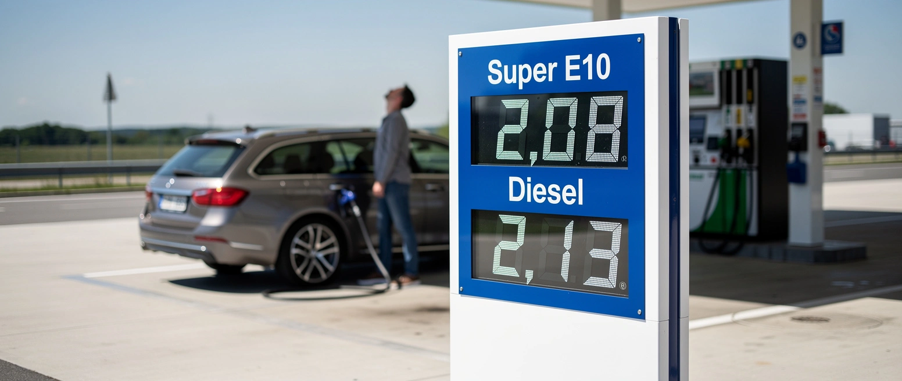

Deutschland schaltet sich ab

In den USA kostet der Liter Benzin gut einen Dollar. In Deutschland über zwei Euro. Dieselbe Physik, derselbe Weltmarkt, mehr als der doppelte Preis.
Der Unterschied heißt nicht Öl, er heißt Steuer. Auf jedem Liter Super liegen rund 95 Cent Abgabe: die feste Energiesteuer von 65 Cent, der CO2-Aufschlag von etwa 14, dazu 19 Prozent Mehrwertsteuer, erhoben auch auf die anderen Steuern. Knapp die Hälfte bis annähernd sechzig Prozent des Preises geht an den Staat, bevor ein Tropfen fließt.
Der aktuelle Sprung an den Zapfsäulen, der achte in Folge, kommt vom Ölpreis. Brent hat wegen der Lage im Nahen Osten binnen einer Woche zehn Dollar zugelegt. Das trifft den Amerikaner genauso. Nur der Sockel darunter, den trägt allein der Deutsche.
Beim Strom ist es dasselbe, nur schärfer. Die europäische Industrie zahlte 2024 im Schnitt knapp 20 Cent je Kilowattstunde, die amerikanische siebeneinhalb. Für manchen deutschen Betrieb, rechnet die DIHK vor, ist der Strom bis zu fünfmal teurer als am Konkurrenzstandort.
Das ist kein Weltmarkt. Das ist eine Reihe von Entscheidungen. Das billige russische Pipelinegas wurde 2022 gekappt, die Leitung, an der Deutschland hing, im selben Jahr gesprengt. Für die erste Anklage sitzt ein Ukrainer vor Gericht, die Ermittler gehen von einem ukrainischen Kommando aus. Das Land, das wir mitfinanzieren.
Die letzten Kernkraftwerke gingen im April 2023 vom Netz, im denkbar teuersten Moment. Auf alles, was danach noch brennt, kommt der CO2-Preis, der jedes Jahr steigt.
Und selbst die Moral, die das rechtfertigen soll, hält nicht. Die EU hat russisches Gas nie aufgehört zu kaufen. Im ersten Halbjahr 2026 kam so viel russisches Flüssiggas in die Union wie nie zuvor, verboten wird es erst 2027. Deutschland ersetzt seine gekappte Pipeline derweil durch amerikanisches und katarisches LNG, teurer als das Gas, das es aufgegeben hat.
Schaden nimmt davon nicht der Kreml. Russland verkauft sein Gas heute nach China und sein Öl nach Indien, mit Abschlag, das eigene Wirtschaftsministerium rechnet fürs China-Geschäft mit dreißig bis vierzig Prozent weniger als in Europa. Weniger Marge, aber das Geld fließt weiter. Die Rechnung für die Geste zahlt nicht Moskau, sie zahlt das deutsche Werk.
Und die ist lang. Seit Kriegsbeginn ist die Produktion der energieintensiven Industrie um gut 15 Prozent eingebrochen, während die Gesamtindustrie halb so stark verlor. Die Chemie liegt bei minus 18 Prozent, Glas und Zement bei bis zu minus 29. Rund 53.000 Arbeitsplätze sind verschwunden. Etwa jeder dritte energieintensive Betrieb denkt laut DIHK darüber nach, das Land zu verlassen.
Die Antwort der Regierung ist ein subventionierter Industriestrompreis von fünf Cent, seit Januar. Er läuft 2028 aus. Man drückt den Preis mit dem Geld der Steuerzahler nach unten, statt den Grund anzufassen, warum er oben steht.
Andere Länder haben teure Energie, weil ihnen die billige fehlt. Deutschland hatte sie und hat sie weggegeben. Für ein Prinzip, an das sich außer ihm niemand hält.
Mehr dazu: Die SPD-Linke will Preisdeckel auf alles.